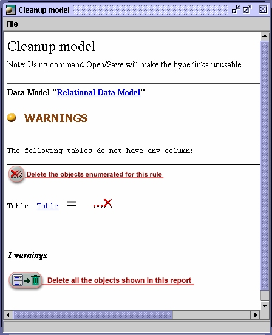

Cleaning-up
a model

During
the creative and iterative process of modeling, model
elements might be created which are not needed anymore once a model has
been completed. ModelSphere offers a clean-up function to find and
erase those “orphan” elements.
Clean-up is provided for process,
data, domain, common item models as
well as for operation libraries.
The section Rules for cleaning-up
below details the applicable rules.
To
clean-up a model:
- Select
the model or one of its diagrams in the Explorer. Note
that the clean-up action operates at the model level.
- In the Tools menu,
select Cleanup Model .
The following dialog will be displayed :

The clean-up can be performed based on :
- A
specific occurrence, by using the icon
 .
.
- All occurrences linked to a rule.
- All enumerated occurrences in the report.
You
can also make the required modifications using the properties of
each object, by using the icon link 
Rules for cleaning-up
Conceptual data model
1. An entity should have
at least one attribute (warning).
2. An entity should have at least one relationship (warning).
3. A primary/unique key must be linked to an attribute or to a
dependency.
4. A relationship must have at least two arcs.
Relational data model
1.
A table should have at least one column (warning).
2. A table should have connectors (warning).
3. A primary/unique key must be linked to a column or dependency.
4. A foreign key must be linked to a column.
5. An index must have at least one indexed element.
6. A trigger must have a body defined as well as a column linked
(warning).
7. A constraint should be linked to a column (warning).
Domain model
1. A domain must be linked
to a data type.
2. A domain should be used by at least one object (warning).
Operation library
1.
A procedure should contain instructions (warning).
2. A parameter must have a type.
Process model
1. A process should have a
graphical representation (warning).
2. An external entity should have a graphical representation (warning).
3. A store should have a graphical representation (warning).
4. A resource should be used (warning).
Common items model
1.
A common item must have a type.
2. A common item should be linked to at least one attribute / column /
field (warning).